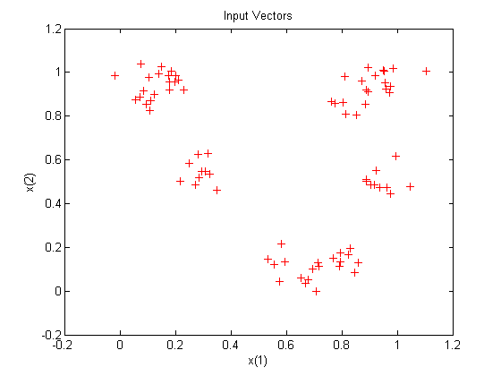
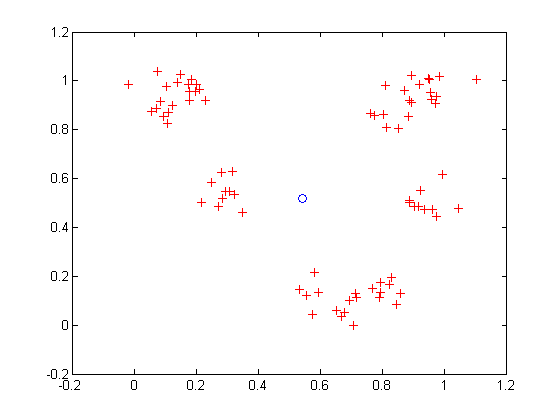
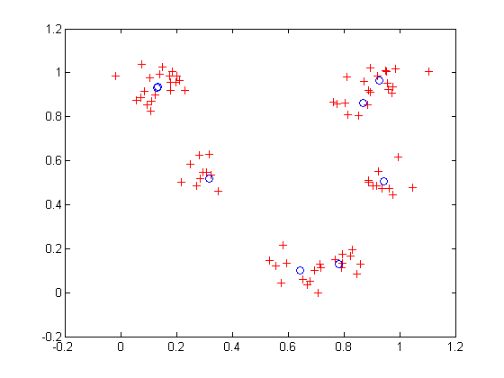

Competitive Learning
Neurons in a competitive layer learn to represent different regions of the input space where input vectors occur.
P is a set of randomly generated but clustered test data points. Here the data points are plotted.
A competitive network will be used to classify these points into natural classes.
% Create inputs X. bounds = [0 1; 0 1]; % Cluster centers to be in these bounds. clusters = 8; % This many clusters. points = 10; % Number of points in each cluster. std_dev = 0.05; % Standard deviation of each cluster. x = nngenc(bounds,clusters,points,std_dev); % Plot inputs X. plot(x(1,:),x(2,:),'+r'); title('Input Vectors'); xlabel('x(1)'); ylabel('x(2)');
Here COMPETLAYER takes two arguments, the number of neurons and the learning rate.
We can configure the network inputs (normally done automatically by TRAIN) and plot the initial weight vectors to see their attempt at classification.
The weight vectors (o's) will be trained so that they occur centered in clusters of input vectors (+'s).
net = competlayer(8,.1);
net = configure(net,x);
w = net.IW{1};
plot(x(1,:),x(2,:),'+r');
hold on;
circles = plot(w(:,1),w(:,2),'ob');
 Set the number of epochs to train before stopping and train this competitive layer (may take several seconds).
Plot the updated layer weights on the same graph.
net.trainParam.epochs = 7;
net = train(net,x);
w = net.IW{1};
delete(circles);
plot(w(:,1),w(:,2),'ob');
 Now we can use the competitive layer as a classifier, where each neuron corresponds to a different category. Here we define am input vector X1 as [0; 0.2].
The output Y, indicates which neuron is responding, and thereby which class the input belongs.
x1 = [0; 0.2]; y = net(x1)
y =
0
1
0
0
0
0
0
0